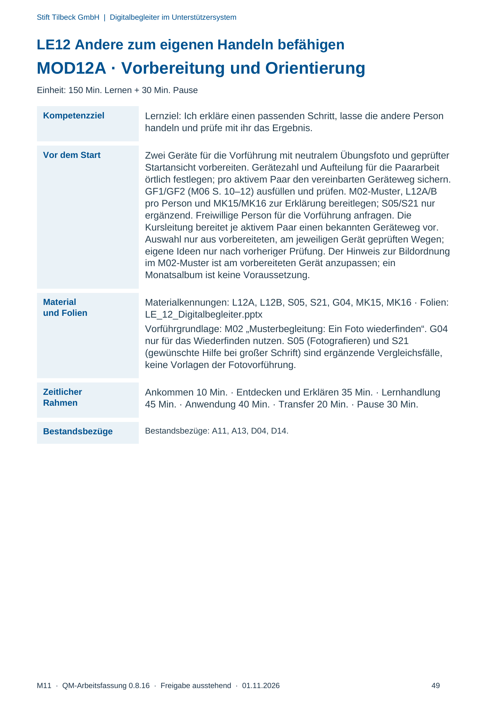
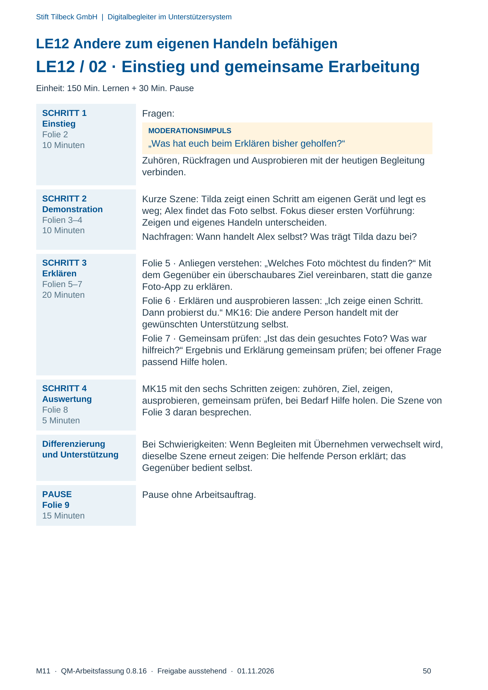
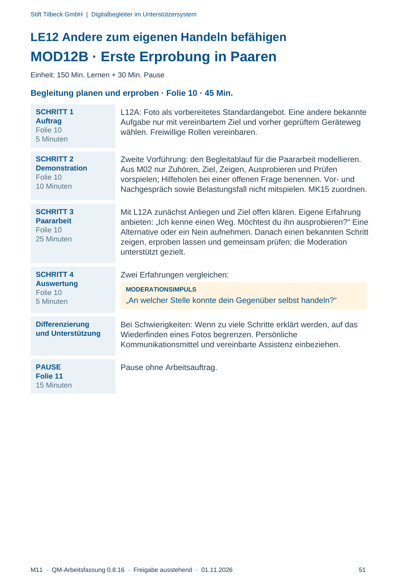
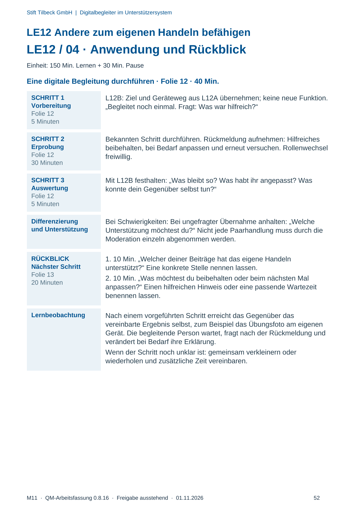

M11 · Originalseite 49, 50, 51, 52
Durchführungshilfe
Gezielte Original-Druckauswahl.
Fragen und Ankreuzfelder werden auf dem Ausdruck bearbeitet. Die Lesefassung speichert keine Antworten.
Lesefassung · Seite 49
Stift Tilbeck GmbH | Digitalbegleiter im Unterstützersystem
LE12 Andere zum eigenen Handeln befähigen
MOD12A · Vorbereitung und Orientierung
Einheit: 150 Min. Lernen + 30 Min. Pause
Kompetenzziel Lernziel: Ich erkläre einen passenden Schritt, lasse die andere Person
handeln und prüfe mit ihr das Ergebnis.
Vor dem Start Zwei Geräte für die Vorführung mit neutralem Übungsfoto und geprüfter
Startansicht vorbereiten. Gerätezahl und Aufteilung für die Paararbeit
örtlich festlegen; pro aktivem Paar den vereinbarten Geräteweg sichern.
GF1/GF2 (M06 S. 10–12) ausfüllen und prüfen. M02-Muster, L12A/B
pro Person und MK15/MK16 zur Erklärung bereitlegen; S05/S21 nur
ergänzend. Freiwillige Person für die Vorführung anfragen. Die
Kursleitung bereitet je aktivem Paar einen bekannten Geräteweg vor.
Auswahl nur aus vorbereiteten, am jeweiligen Gerät geprüften Wegen;
eigene Ideen nur nach vorheriger Prüfung. Der Hinweis zur Bildordnung
im M02-Muster ist am vorbereiteten Gerät anzupassen; ein
Monatsalbum ist keine Voraussetzung.
Material
und Folien
Materialkennungen: L12A, L12B, S05, S21, G04, MK15, MK16 · Folien:
LE_12_Digitalbegleiter.pptx
Vorführgrundlage: M02 „Musterbegleitung: Ein Foto wiederfinden“. G04
nur für das Wiederfinden nutzen. S05 (Fotografieren) und S21
(gewünschte Hilfe bei großer Schrift) sind ergänzende Vergleichsfälle,
keine Vorlagen der Fotovorführung.
Zeitlicher
Rahmen
Ankommen 10 Min. · Entdecken und Erklären 35 Min. · Lernhandlung
45 Min. · Anwendung 40 Min. · Transfer 20 Min. · Pause 30 Min.
Bestandsbezüge Bestandsbezüge: A11, A13, D04, D14.
Originalseite ansehen

Lesefassung · Seite 50
Stift Tilbeck GmbH | Digitalbegleiter im Unterstützersystem
LE12 Andere zum eigenen Handeln befähigen
LE12 / 02 · Einstieg und gemeinsame Erarbeitung
Einheit: 150 Min. Lernen + 30 Min. Pause
SCHRITT 1
Einstieg
Folie 2
10 Minuten
Fragen:
MODERATIONSIMPULS
„Was hat euch beim Erklären bisher geholfen?“
Zuhören, Rückfragen und Ausprobieren mit der heutigen Begleitung
verbinden.
SCHRITT 2
Demonstration
Folien 3–4
10 Minuten
Kurze Szene: Tilda zeigt einen Schritt am eigenen Gerät und legt es
weg; Alex findet das Foto selbst. Fokus dieser ersten Vorführung:
Zeigen und eigenes Handeln unterscheiden.
Nachfragen: Wann handelt Alex selbst? Was trägt Tilda dazu bei?
SCHRITT 3
Erklären
Folien 5–7
20 Minuten
Folie 5 · Anliegen verstehen: „Welches Foto möchtest du finden?“ Mit
dem Gegenüber ein überschaubares Ziel vereinbaren, statt die ganze
Foto-App zu erklären.
Folie 6 · Erklären und ausprobieren lassen: „Ich zeige einen Schritt.
Dann probierst du.“ MK16: Die andere Person handelt mit der
gewünschten Unterstützung selbst.
Folie 7 · Gemeinsam prüfen: „Ist das dein gesuchtes Foto? Was war
hilfreich?“ Ergebnis und Erklärung gemeinsam prüfen; bei offener Frage
passend Hilfe holen.
SCHRITT 4
Auswertung
Folie 8
5 Minuten
MK15 mit den sechs Schritten zeigen: zuhören, Ziel, zeigen,
ausprobieren, gemeinsam prüfen, bei Bedarf Hilfe holen. Die Szene von
Folie 3 daran besprechen.
Differenzierung
und Unterstützung
Bei Schwierigkeiten: Wenn Begleiten mit Übernehmen verwechselt wird,
dieselbe Szene erneut zeigen: Die helfende Person erklärt; das
Gegenüber bedient selbst.
PAUSE
Folie 9
15 Minuten
Pause ohne Arbeitsauftrag.
Originalseite ansehen

Lesefassung · Seite 51
Stift Tilbeck GmbH | Digitalbegleiter im Unterstützersystem
LE12 Andere zum eigenen Handeln befähigen
MOD12B · Erste Erprobung in Paaren
Einheit: 150 Min. Lernen + 30 Min. Pause
Begleitung planen und erproben · Folie 10 · 45 Min.
SCHRITT 1
Auftrag
Folie 10
5 Minuten
L12A: Foto als vorbereitetes Standardangebot. Eine andere bekannte
Aufgabe nur mit vereinbartem Ziel und vorher geprüftem Geräteweg
wählen. Freiwillige Rollen vereinbaren.
SCHRITT 2
Demonstration
Folie 10
10 Minuten
Zweite Vorführung: den Begleitablauf für die Paararbeit modellieren.
Aus M02 nur Zuhören, Ziel, Zeigen, Ausprobieren und Prüfen
vorspielen; Hilfeholen bei einer offenen Frage benennen. Vor- und
Nachgespräch sowie Belastungsfall nicht mitspielen. MK15 zuordnen.
SCHRITT 3
Paararbeit
Folie 10
25 Minuten
Mit L12A zunächst Anliegen und Ziel offen klären. Eigene Erfahrung
anbieten: „Ich kenne einen Weg. Möchtest du ihn ausprobieren?“ Eine
Alternative oder ein Nein aufnehmen. Danach einen bekannten Schritt
zeigen, erproben lassen und gemeinsam prüfen; die Moderation
unterstützt gezielt.
SCHRITT 4
Auswertung
Folie 10
5 Minuten
Zwei Erfahrungen vergleichen:
MODERATIONSIMPULS
„An welcher Stelle konnte dein Gegenüber selbst handeln?“
Differenzierung
und Unterstützung
Bei Schwierigkeiten: Wenn zu viele Schritte erklärt werden, auf das
Wiederfinden eines Fotos begrenzen. Persönliche
Kommunikationsmittel und vereinbarte Assistenz einbeziehen.
PAUSE
Folie 11
15 Minuten
Pause ohne Arbeitsauftrag.
Originalseite ansehen

Lesefassung · Seite 52
Stift Tilbeck GmbH | Digitalbegleiter im Unterstützersystem
LE12 Andere zum eigenen Handeln befähigen
LE12 / 04 · Anwendung und Rückblick
Einheit: 150 Min. Lernen + 30 Min. Pause
Eine digitale Begleitung durchführen · Folie 12 · 40 Min.
SCHRITT 1
Vorbereitung
Folie 12
5 Minuten
L12B: Ziel und Geräteweg aus L12A übernehmen; keine neue Funktion.
„Begleitet noch einmal. Fragt: Was war hilfreich?“
SCHRITT 2
Erprobung
Folie 12
30 Minuten
Bekannten Schritt durchführen. Rückmeldung aufnehmen: Hilfreiches
beibehalten, bei Bedarf anpassen und erneut versuchen. Rollenwechsel
freiwillig.
SCHRITT 3
Auswertung
Folie 12
5 Minuten
Mit L12B festhalten: „Was bleibt so? Was habt ihr angepasst? Was
konnte dein Gegenüber selbst tun?“
Differenzierung
und Unterstützung
Bei Schwierigkeiten: Bei ungefragter Übernahme anhalten: „Welche
Unterstützung möchtest du?“ Nicht jede Paarhandlung muss durch die
Moderation einzeln abgenommen werden.
RÜCKBLICK
Nächster Schritt
Folie 13
20 Minuten
1. 10 Min. „Welcher deiner Beiträge hat das eigene Handeln
unterstützt?“ Eine konkrete Stelle nennen lassen.
2. 10 Min. „Was möchtest du beibehalten oder beim nächsten Mal
anpassen?“ Einen hilfreichen Hinweis oder eine passende Wartezeit
benennen lassen.
Lernbeobachtung Nach einem vorgeführten Schritt erreicht das Gegenüber das
vereinbarte Ergebnis selbst, zum Beispiel das Übungsfoto am eigenen
Gerät. Die begleitende Person wartet, fragt nach der Rückmeldung und
verändert bei Bedarf ihre Erklärung.
Wenn der Schritt noch unklar ist: gemeinsam verkleinern oder
wiederholen und zusätzliche Zeit vereinbaren.
Originalseite ansehen
